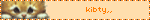
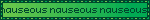
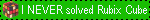
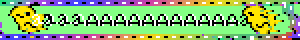

hi!! this is my first attempt at making a site. using social media makes me feel bad lately so i decided switch to something new. i want to keep track of the new music i find so i think the music "blog" (its prolly gonna be more of a list with some comments)







